PART NUMBER
품번을 알고 있다면
제조사와 품번을 그대로 공유해 주세요. 기존 제품에 표시된 문구나 사진도 상담에 도움이 됩니다.
- 제조사 표기
- 전체 품번·접미 기호
- 필요 수량·희망 일정
BEARING HOUSING & INDUSTRIAL BEARINGS
주물 소재 가공을 통한 베어링 하우징 제작과
산업용 베어링 공급을 함께 대응합니다.
도면이 있다면 제작 상담으로,
품번이 있다면 베어링 문의로 시작하세요.
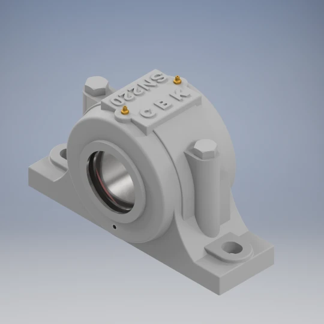
베어링 하우징 제작 + 산업용 베어링 공급
cbk.ai.kr ↗ABOUT SUNGJIN CBK
제작과 공급, 두 가지 역할하우징과 베어링을 따로 보기보다,
사용할 조건과 필요한 사양을 먼저 봅니다.
성진씨비케이는 주물 소재를 가공한 베어링 하우징 제작과 산업용 베어링 공급을 함께 대응합니다. 도면, 규격과 사용 조건을 바탕으로 제작 및 공급 가능 여부를 검토합니다.
형상·소재·주요 치수·수량을 확인하고 가공 범위와 제작 조건을 협의합니다.
품번·규격·수량 또는 기존 제품 표기를 바탕으로 공급 조건을 확인합니다.
출처: 성진씨비케이 공식 홈페이지 회사소개. 설립 연도는 홈페이지 표기 기준이며 별도 법인등기 확인을 의미하지 않습니다.
BEARING HOUSING / PRODUCT FAMILIES
제품명에서 도면으로, 도면에서 사양으로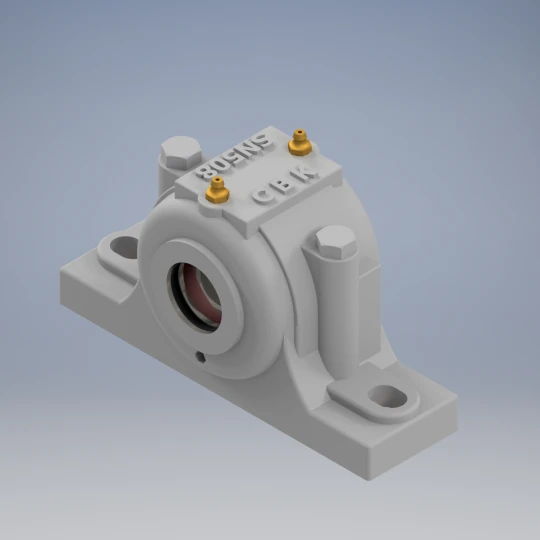
플러머 블록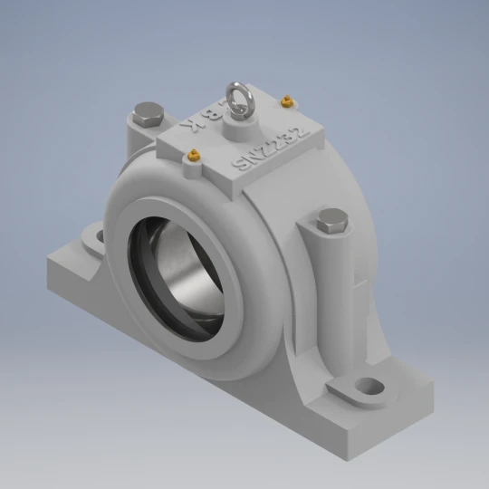
플러머 블록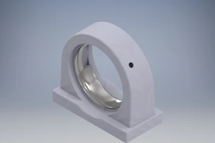
베어링 유닛·케이스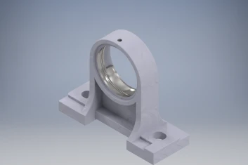
베어링 유닛·케이스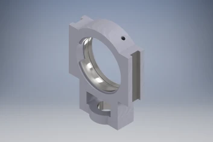
테이크업형 계열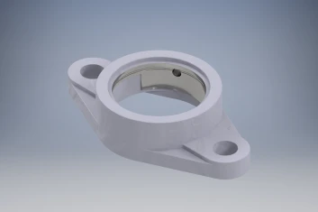
플랜지형 계열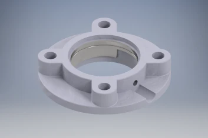
플랜지형 계열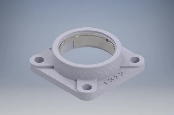
플랜지형 계열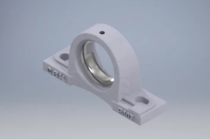
필로형 계열이미지는 모두 공식 홈페이지의 제품 렌더링입니다. 제품 분류는 홈페이지의 잠정 표기를 따르며, 정확한 형상·규격·제작 범위와 호환 여부는 도면 또는 사양 검토 후 확인합니다. 각 제품을 누르면 공식 상세 페이지로 연결됩니다.
MACHINING EQUIPMENT
홈페이지 설비 현황 · 2026.08 기준설비 종류
전체 보유 대수
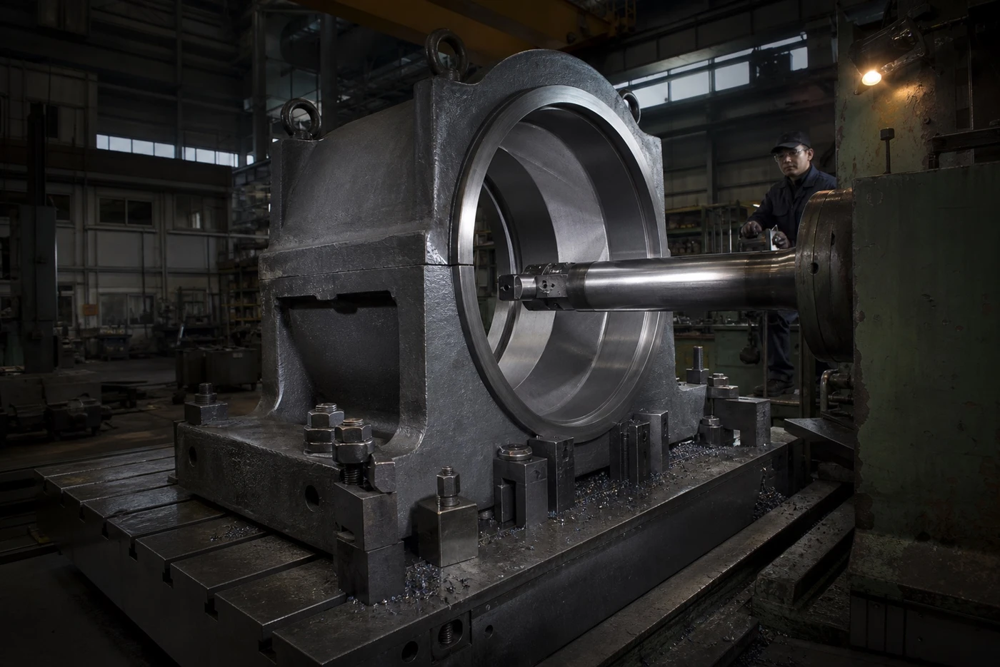
홈페이지 기재 보링 내경
Ø1,500 mm구체적인 작업 가능 여부는 도면 검토 후 확인합니다.
| 설비 | 대수 |
|---|---|
| 선반 | 2대 |
| 밀링 | 3대 |
| CNC선반 | 6대 |
| CNC밀링 | 4대 |
| Horizontal 밀링 | 1대 |
| 터닝 | 2대 |
| 보링기 | 1대 |
| 레이디알 머신 | 1대 |
| 연마기 | 3대 |
| Shot Blast Machine | 2대 |
| Tapping Machine | 2대 |
| 합계 · 11종 | 27대 |
설비 대수와 보링 내경은 공식 홈페이지의 회사 확인 정보에 근거합니다. Ø1,500 mm는 모든 형상·소재·공차에서 동일한 작업 범위를 보장하는 수치가 아닙니다.
MACHINING & REQUIREMENT REVIEW
도면마다 필요한 조건을 확인합니다형상·주요 치수·수량과
사용 조건을 확인합니다.
주물 소재와 필요한 면의
가공 가능 여부를 검토합니다.
도면과 주문 조건에 맞춰
확인할 항목을 정리합니다.
표기·포장·희망 일정과
수량을 함께 협의합니다.
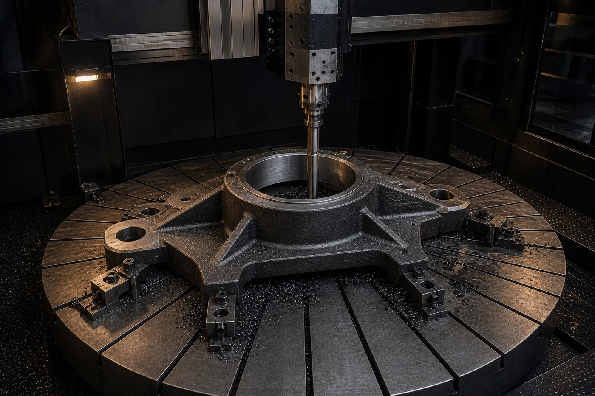
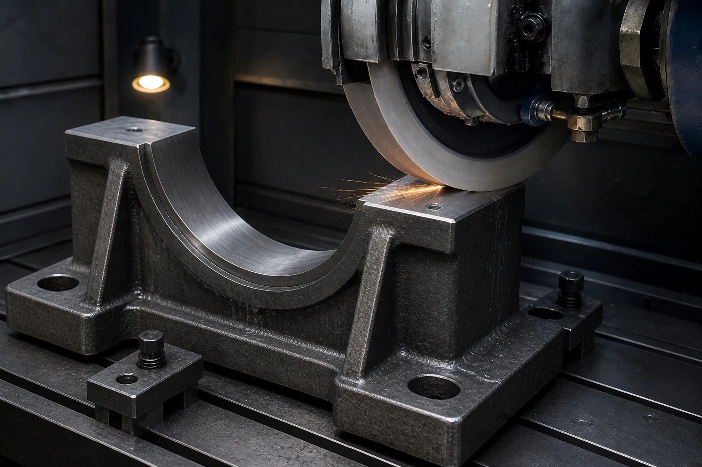
가공 이미지에는 실제 양평 공장의 설비·작업자가 포함되어 있지 않습니다. 공차·소재·크기·고정 조건 및 제공 가능한 확인 자료는 제품별 협의 사항이며, 미확인 검사 장비·인증·보증 수치를 전제하지 않습니다.
INDUSTRIAL BEARINGS / SUPPLY
확인 가능한 정보에서 시작하는 공급제조사 표기와 품번, 필요한 규격과 수량을 알려주세요.
문의 시점의 공급 가능 여부와 조건을 확인합니다.
PART NUMBER
제조사와 품번을 그대로 공유해 주세요. 기존 제품에 표시된 문구나 사진도 상담에 도움이 됩니다.
DIMENSION
내경·외경·폭 등 확인한 치수를 알려주세요. 정보가 부족하면 추가 확인이 필요한 항목부터 안내합니다.
ASSEMBLY
사용할 하우징 계열과 기존 베어링 정보를 함께 공유해 주세요. 제작과 공급 조건을 함께 검토합니다.
취급 가능한 브랜드·품목·재고·납기는 문의 시점에 확인합니다. 미확인 공식 대리점 관계나 특정 브랜드의 상시 재고를 표시하지 않습니다.
TWO LOCATIONS / ONE COMPANY
주식회사 성진씨비케이YANGPYEONG
경기도 양평군 양서면 국화길 18
본사 / 공장ANSAN
경기도 안산시 단원구 풍전로 37-9
314동 114호·214호·314호·115호
연락처·주소·이메일은 공식 홈페이지 표기 기준입니다. 이메일별 담당 업무나 사업장별 분담은 별도 확인 없이 지정하지 않았습니다.
SOURCE & IMAGE NOTES
정보와 시각 자료의 기준제품은 홈페이지의 렌더 이미지입니다. 가공 장면은 홈페이지에 게재된 생성·연출 이미지이며 실제 공장·설비·작업자 촬영본이 아닙니다.
이미지의 원래 형상은 임의로 수정하지 않았으며, 웹용으로 크기와 파일 형식만 최적화했습니다. 이미지 및 브랜드의 권리는 각 권리자에게 있습니다.
사업 소개·제품·공개 연락처
1983년 설립 표기·사업장
제품군·렌더 이미지·제작 상담
설비 대수·보링 범위·연출 이미지
품번·규격·하우징 연계 문의
공개 자료 확인 기준: 2026년 9월 16일. 이 자료는 회사·제품·서비스 소개용이며, 특정 주문의 제작 가능 여부·품질 보증·납기를 확약하는 문서가 아닙니다.